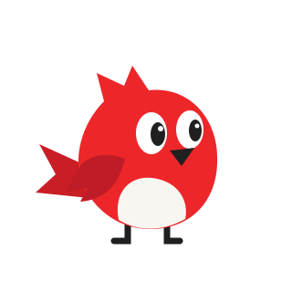
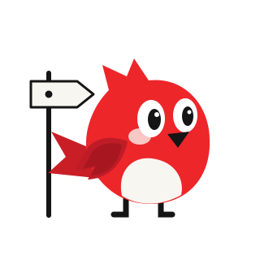

01 • Загрузка
Кабинет / Инференс

Загрузка раздела
Мягкий взмах крыльями при переходе в крупный раздел или ожидании генерации промпта в ИИ-мастере.
Пока идёт сетевой запрос • задержка 220ms от мерцания
Четыре целевых состояния для мастера настройки, кабинета и навигации платформы. Анимации завершаются за 1–2 цикла и переходят в статичную позу, чтобы не отвлекать от чтения и работы.

Мягкий взмах крыльями при переходе в крупный раздел или ожидании генерации промпта в ИИ-мастере.
Кратко машет крылом и подмигивает ровно два раза при открытии первого шага настройки, затем спокойно замирает.
Один радостный прыжок и дружелюбный жест после подтверждённого сервером создания сценария.

Воробей у деревянного указателя с любопытством оглядывается один раз, помогая сориентироваться без раздражения.
Полное отсутствие движения, мигания и прыжков. Безопасная нейтральная форма для таблиц, настроек и ошибок.